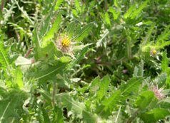

 Blessed Thistle is a herbal galactagogue commonly used to increase milk supply though no scientific research has been done to prove its effectiveness. Mothers have experienced success in boosting their milk supply within 12 to 72 hours when taking 3 capsules of this herb along with 3 capsules of Fenugreek per day. Unlike other medications, there is limited standardization with herbs and not a lot of evidence so it's hard to know what the exact success rate is. We receive a lot of positive feedback from many mothers that have used herbs to increase their milk supply. Certainly, it can't hurt to try. Just remember that the most effective way to increase your milk supply is by offering and encouraging your baby to nurse frequently.  
Nature's Herbs Blessed Thistle 360mg Avoid substances that may cause lowered milk supply such as: Smoking Caffeine Birth control pills Decongestants and antihistamines Severe weight loss diets Sage and jasmine tea, parsley, peppermint candies (Altoids, Starlight mints, etc)
There are no known negative effects. The good news it that this herb is virtually nontoxic and even has anti-bacterial and other antiseptic properties. Fenugreek and cnicus benedictus seem to work better if you take both, not just one or the other. In my experience with breastfeeding mothers, the effects of these herbs show quickly. If the herbs are working, you will usually notice a difference within 12 to 72 hours of starting them. They don't work for everyone. Historically it has been used to suppress appetite and digestive ailments such as gas, diarrhea, and ulcers. As with the use of any medicinal herb, it is recommended to consult a physician who is knowledgeable about herbs before using them. |